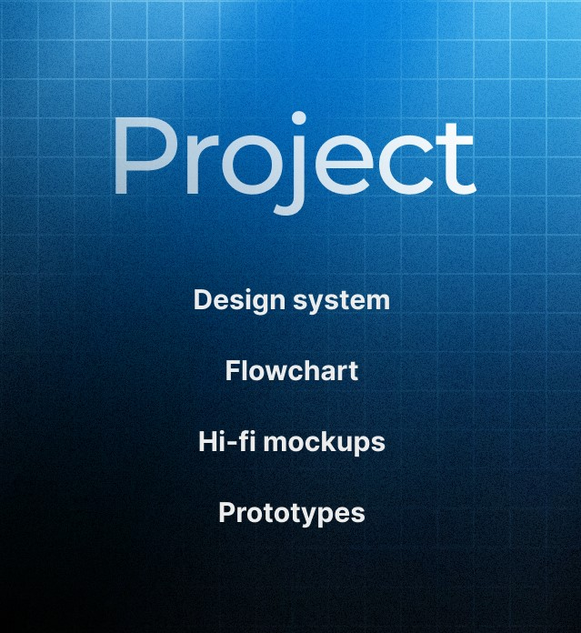
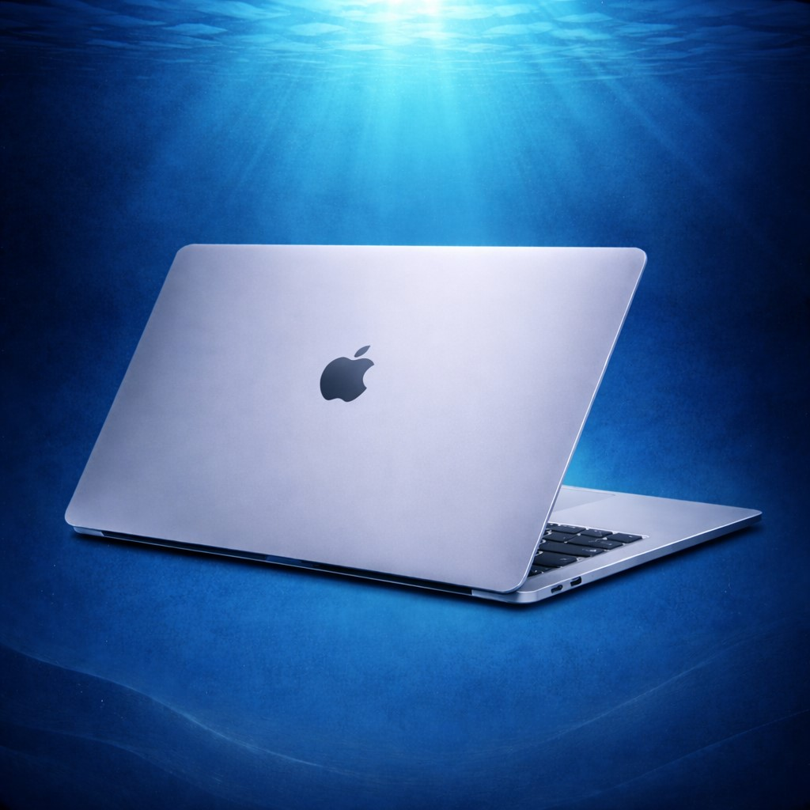
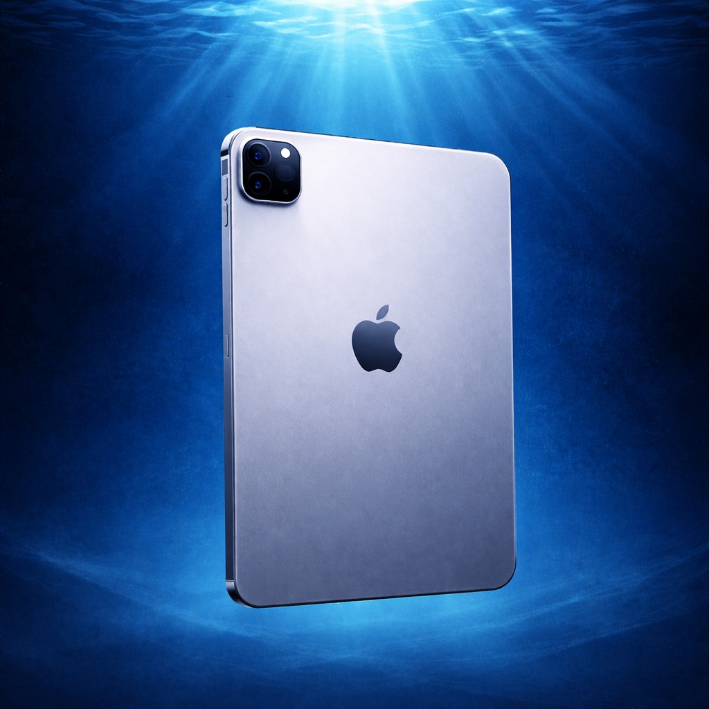
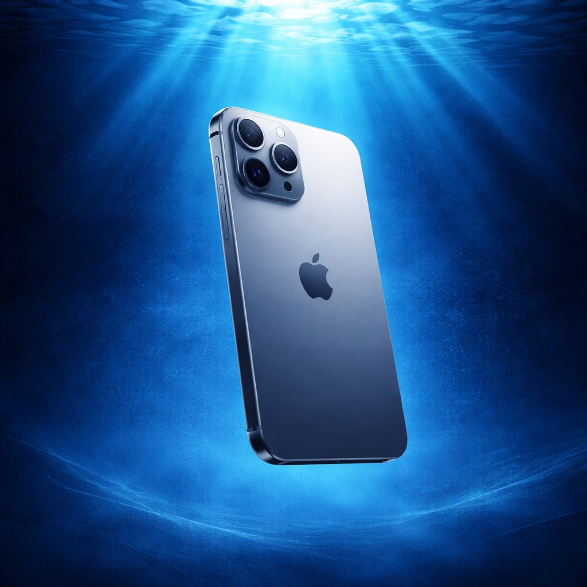

Click to openPortfolio's project
3 min readTL;DR
This project demonstrates the process of transforming a visual concept into a complete digital experience through design systems, accessibility, prototyping, and documentation.
Overview
The following sections cover the different stages of the project, from the initial concept and visual exploration to the creation of the design system and high-fidelity prototype.
Deliverables
1. Figma Design System + Mockups
2. Interactive Prototypes

Click to open
Click to open
Click to openTable of Contents
1. What is this project?
This project was created to showcase the development of a complete design system and its application to a high-fidelity prototype. Rather than solving a specific product challenge, the objective was to explore how a simple concept could be translated into a coherent digital experience through systems thinking, accessibility, and visual design.
The project covers the full process, from concept development and visual exploration to system creation, prototyping, documentation, and implementation research.
2. Concept and visual references
The project started with a simple question: how can navigation feel more like exploration? The concept is inspired by immersion. Growing up in Tangier, the sea has always been a familiar presence and became the foundation for the visual direction of the project. The experience is built around the idea of moving through different layers, discovering content gradually rather than navigating isolated pages. Several references influenced the visual language:
- Underwater environments, which inspired the atmosphere, light behaviour, colour relationships, and sense of depth.
- Early web experiences, where interfaces often felt like places to explore rather than collections of screens.
- Video game menus, particularly from the late 90s, where navigation, hierarchy, and spatial organisation were deeply connected.
The goal was not to recreate these references literally, but to use them as inspiration for a simple interface with a distinct identity.
3. Design system and accessibility
Once the visual direction was defined, the project shifted towards building a design system capable of supporting the entire experience. The system includes colour variables, typography, spacing rules, components, interaction states, and motion principles.
Accessibility was considered throughout the process. Colour combinations were tested against WCAG requirements, interaction states were designed to remain distinguishable, and hierarchy was structured to support readability across the interface.
The visual system also reinforces the concept itself. Light, contrast, and colour shifts are inspired by underwater environments.
4. Process
The project began with exploratory visual work in Figma and Adobe Illustrator. Rather than immediately building a system, I first experimented with different visual directions to understand the atmosphere, tone, and identity of the interface. Once a clear direction emerged, I moved into wireframes to establish structure, hierarchy, and navigation patterns.
5. Prototype
The final prototype was developed in Figma to communicate navigation, interactions, and the overall immersive experience. While Figma's prototyping capabilities have limitations, it provided enough flexibility to explore transitions, interaction patterns, and behavioural principles. Additional motion specifications were documented within the design system to define how elements should move, react, and transition between states.
6. Outcome
The outcome is both a design system and an interactive prototype, illustrating the process of translating a concept into a coherent, accessible, and scalable digital experience through a structured design approach.